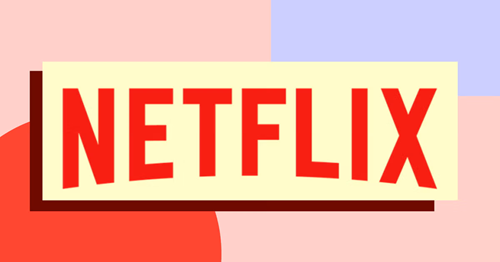

Pros
- Predictable Revenue Stream
- Customer Loyalty and Retention
- Scalability
- Pressure to Continuously Deliver Value
- Market Saturation
- Initial Revenue Challenges
Subscription based businesses offer many benefits, with predictable, recurring revenue being one of the biggest. This steady income helps owners plan and invest with confidence. Subscribers tend to stick around as long as they feel they’re getting value, which builds customer loyalty and reduces the need for constant marketing. These businesses also gain valuable insights from customer data, allowing them to improve their offerings over time. Additionally, subscription models often scale well, especially for digital services, because adding new customers typically costs less once the system is in place. However, subscription businesses face challenges too. High cancellation rates can hurt revenue if customers don’t feel the service is worth the cost, so businesses must continuously deliver quality and fresh content. Managing billing and technical systems can be complex, and any issues can frustrate customers. The market is also crowded with subscription options, making it harder to stand out. Lastly, building a strong subscriber base takes time, which can lead to early cash flow struggles for new businesses.
Recession resilience
Subscription based businesses tend to be fairly resilient during recessions because they rely on recurring revenue from loyal customers. Even when people tighten their budgets, many prefer to keep essential or valued subscriptions rather than make one time purchases. However, businesses that offer non essential or luxury services may see cancellations increase. Overall, having a steady income stream helps these businesses during recessions better than many traditional sales models.

Subscription service growth

How could you start
Starting a subscription based business begins with identifying a product or service that people need or want regularly. This could be anything from physical goods like snacks or skincare products to digital services like education, fitness programs, or software tools. Once you have your idea, you’ll need to define what your subscription offers, how often customers will be billed (monthly, quarterly, annually), and what value they’ll get for their money. Setting up a website with a simple signup and payment system is key, along with managing customer accounts and delivery (if physical). The focus should be on providing consistent value so that customers stay subscribed. Marketing and customer retention strategies, like free trials or loyalty rewards, also play a big role in growing the business.